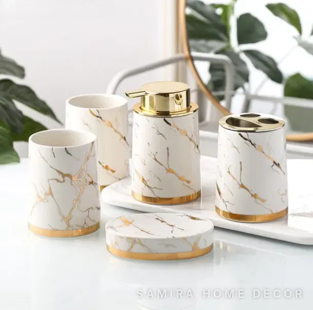

Measure the usable bench space
Measure the depth and width between the basin, tap and wall. Leave room for the tap handle to move and enough space to lift the soap dispenser to refill it. If the vanity is narrow, start with a dispenser and a toothbrush holder and store backups in a drawer.
Choose a set or individual pieces
A matching set makes it easier to repeat a finish across the vanity. Compare what’s included before you buy. Start with the pieces you use daily and add a tray or storage jar if space permits. Compare the Aurelia Marble & Gold Bathroom Set with an individual piece such as the Naples Sand Soap Dispenser.
Think about moisture and care
Look for stable bases, smooth surfaces you can wipe easily and openings wide enough to clean. For finishes and care, follow the product’s own instructions. Avoid abrasive cleaners on decorative coatings unless the manufacturer recommends them. A washable tray can help keep pooled water off the bench.
Match the look to the room
If your bathroom already has strong veining or patterned tiles, solid accessories can help it feel calmer. In a quieter room, introduce one material or finish with a coordinated set. Match warm metals with warm tones in towels or timber, and check how the finishes look in the bathroom’s own light.
Compare before you order
Browse the luxury bathroom accessories collection and check product dimensions, the listed finish and available variants. Check delivery charges and eligibility at checkout. For ideas that carry into other rooms, see our luxury home styling guide.